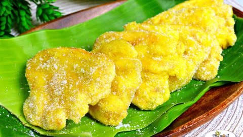

Maruya (Banana Fritter)

Description
Maruya or Banana Fritter is a type of Filipino snack. It is a fried concoction made from ripe “Saba” banana or plantains. The bananas can either be sliced or mashed. It is then mixed with a batter composed of flour, sugar, vanilla, and egg. A fritter is defines as a mixture (such as a batter) that includes either fruit or meat. Maruya obviously falls under the category.
Maruya is the perfect snack or dessert! Coated with a fluffy batter and fried to golden perfection, these banana fritters are sure to be a family favorite.
Ingredients
- 6 pieces banana saba or plantain variety, ripe (mashed)
- 1 cup all-purpose flour
- 1 1/2 teaspoon vanilla extract
- 1 piece egg beaten
- 1 teaspoon baking powder
- 3/4 cup granulated white sugar
- 1 cup fresh milk
- 3/4 cups cooking oil
- 1/2 teaspoon salt
Instructions
- In a large bowl, combine flour, baking powder, salt, and 1/2 cup sugar. Mix well.
- Gradually add the mashed bananas while mixing.
- Add the egg, vanilla extract, and milk. Mix to incorporate all the ingredients.
- Heat half of the oil in a pan.
- When the oil becomes hot, scoop about 1/2 cup of the mixture and then pour in the pan (add the remaining oil in the next batches).
- Fry both sides until the color turns golden brown.
- Sprinkle the remaining sugar on both sides.
Home